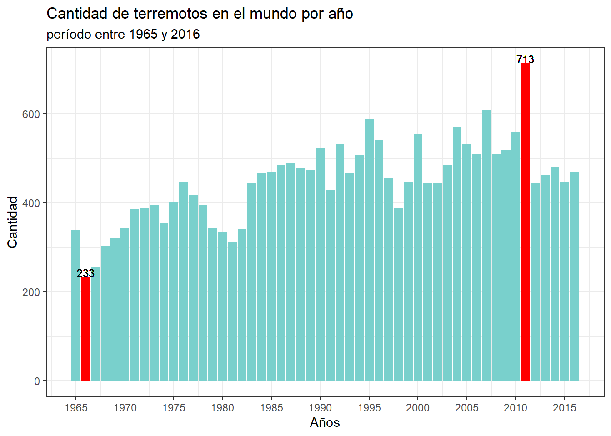
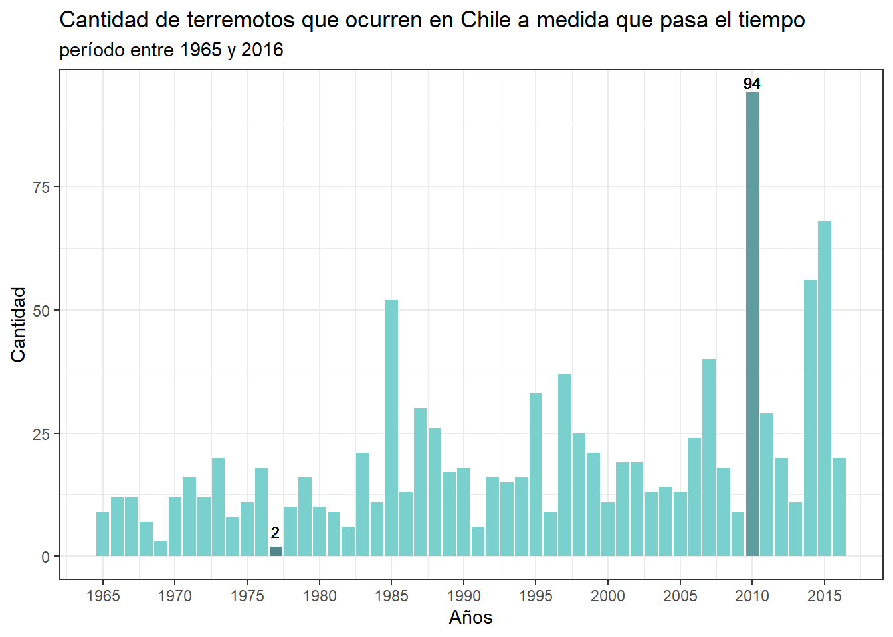
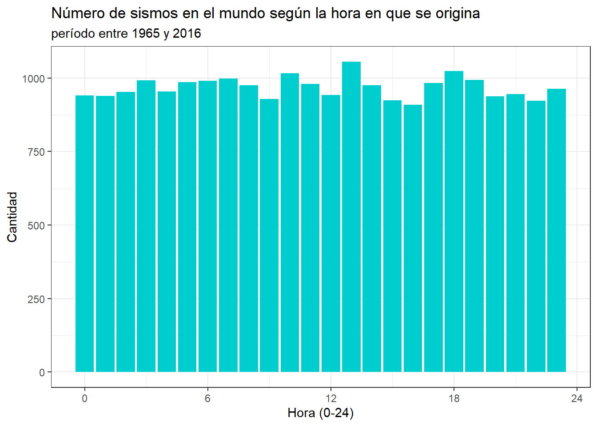

| Descripción de variables | ||
| Variables | Tipo | Descripción |
|---|---|---|
| Fecha | Numérico | Muestra la fecha en que ocurrió el sismo |
| Hora | Numérico | Entrega la hora en que se originó un terremoto |
| Latitud | Numérico | Señala la latitud como coordenada geográfica |
| Longitud | Numérico | Señala la longitud como coordenada geográfica |
| Magnitud | Numérico | Es la magnitud en escala Richter de los terremotos |
| País | Carácter | Corresponde al país en el que sucedió el sismo |
| Fuente: https://www.kaggle.com/datasets/usgs/earthquake-database | ||
Terremotos a nivel mundial desde 1965 a 2016
Resumen ejecutivo
Los terremotos son una latente amenaza en el mundo, que genera grandes daños. Por eso es importante conocer su comportanmiento, por lo que se hizo un analisis descriptivo de una base de datos que contiene los terremotos a nivel mundial con magnitud mayor 5.5 que ocurrieron entre 1965 a 2016. Se encontró que no existe un patrón en el tiempo en que se originan los sismos. En un futuro, se podria obtener una variable que indica si un terremoto generó un terremoto o no, para asi saber la cantidad de sismo que generan tsunamis.
Introducción
Los terremotos son liberaciones de energía que se emiten a la superficie de la tierra, debido al choque o roce de las placas tectónicas, y puede provocar daños de gran medida los cuales afectan directamente a ciudades y zonas rurales. Además, origina otros desastres naturales, tales como derrumbes o tsunamis. Como todos saben, estos desastres son una latente amenaza para las personas.
Por esta razón, algunas de las preguntas más comunes que se plantean son: a pesar de que los terremotos no se pueden predecir, ¿existe algún patrón en la frecuencia de este fenómeno?, ¿cuántos sismos ocurren aproximadamente en un año?, ¿hay una hora en donde se originan más temblores? y si es esto correcto, ¿cuál es?
Gracias a la labor Centro de Sismología Internacional (CSI), la organización mundial que se encarga de registrar la magnitud y la localización de los sismos, es posible acceder a la información recopilada, para hacer innovaciones que podrían prevenir catástrofes graves, o bien, para entender el comportamiento de este fernómeno.
Dejando esto claro, en este informe se realizará un análisis estadístico descriptivo con datos recopilados por el CSI, con el objetivo de entregar información sobre los países con mayor actividad sísmica y también determinar si es que existe una hora en donde se originan más terremotos.
Este trabajo se divide en cuatro secciones. primero se dará información y contexto sobre qué son los terremotos y por qué es importante hacer mediciones sobre estos fenómeno . A continuación se presentarán los datos que se utilizaran como base para el analisis posterior. En la tercera parte se hará un analisis descriptivo de estos datos a traves del uso de graficos y tablas. Y en último lugar, se realizará una conclusión en la que se identificarán posibles patrones en la magnitud, frecuencia y hora de los terremotos.
Contexto de datos
Como se dijo anteriormente, los terremotos son un desastre natural que genera grandes catastrofes alrededor del mundo y tambien genera otros desastres naturales tales como tsunamis o derrumbes. este fenomeno se puede medir en escala richter, que asigna un número para cuantificar la energía que libera un terremoto. si este escalar es mayor o igual a 8.5, se dice que ha ocurrido un megaterremoto.
Si bien los terremotos pueden ocurrir en cualquier parte del mundo, existe una region llamada el anillo de fuego, que es un sector en donde ocurre el 90% de los terremotos en el mundo. esto se ubica alrederor de las costas del oceano pacifico
La base se consiguio con el siguiente enlace: donde se encuentran datos sobre los terremotos de magnitud mayor a 5,5 que han acontecido desde 1965 a 2016
Existe una variable llamada “tipo”, en la que indica el origen del terremoto, en este trabajo se usa unicamente por origen de contacto entre placas tectonicas.
Por otro lado, se realiza una geolocalizacion inversa, en la que se usan la longitud y la latitud como coordenadas geograficas para poder conseguir el país en donde ocasiona un sismo.
En adición, en la variable fecha, se usaran solo los años, y en la variable hora, se usara solamente la hora en la cual sucede un sismo y no los minutos ni los segundos.
Descripción de variables
La siguiente tabla muestra las variables que se usarán en el análisis despues de haber limpiado la base de datos original, tambien se especifica a que tipo corresponden, y una breve definición sobre la información que entregan.
En este trabajo se usarán en su mayoria las columnas que contienen la fechas, horas, magnitudes, y países en las que ocurrieron los terremotos.
Resultados
Se quiere estudiar la cantidad de terremotos que hay en el mundo y su relación con variables tales como año, magnitud, hora, etc. esto con el fin de entender o estudiar el comportamiento de los sismos. Para ello se adjuntarán gráficos y tablas que entregarán información sobre la frecuencia de los sismos de acuerdo a diferentes variables.
Uno de los objetivos de este trabajo es conocer el número de sismos que hay en el periodo de un año, para así obtener el rango de repetición de estos fenómenos. Con este propósito el siguiente gráfico visualiza la cantidad de terremotos que hay en el mundo en cada año, desde 1965 hasta 2016:

Se puede apreciar, que el 2011 fue el año con la mayor cantidad de sismos en el planeta, con un total de 713 terremotos. Esto se puede deber a las réplicas que fueron originadas por el terremoto de magnitud 9,1 en Japón, el día 11 de marzo. Por el contrario, el año con la menor cantidad de sismos fue en 1966 con la suma de 233 temblores. Una explicacion posible a este bajo número es que en esa época no existía aún la tecnología necesaria para registrar todos los terremotos que ocurrían en el mundo. Por otro lado, no se ve una tendencia clara al aumento o disminucion de terremotos por año
Ahora bien, se quiere dar un enfoque nacional, por lo que el siguiente grafico muestra la cantidad de terremotos que ocurren por año en Chile.

Se puede apreciar que el periodo con mayor cantidad fue el 2010, esto se podria explicar a que son las replicas producidas por el terremoto de magnitud 8,8 el dia 27 de febrero. por el contrario, el año con menor cantidad de sismos fue 1977, con un total de 2 terremotos que tambien se puede deber a que no existia la tecnologia suficente para registrar todos los sismos que ocurrian. De la misma forma, no se obtiene un patron claro en la subida o bajada del número de terremotos que suceden en un año.
Por otro lado, se quiere conocer como se distribuye la cantidad de sismos que hay, dependiendo de la hora en que ocurren en el dia. para ello, se realiza el siguiente grafico

Se puede ver que aproximadamente, se originan el mismo número de sismos en todas las horas del día. gracias a este comportamiento se puede evidenciar que los terremotos son impredecibles,
Por ultimo, se desea conocer cuales han sido los sismo con mayor magnitud y su localizacion. dentro del intervalo de tiempo estudiado. para ello, se realiza la siguiente tabla que muestra los cinco terremotos de mayor magnitud entre 1965 y 2016.
| Fecha | Magnitud | País |
|---|---|---|
| 2004 | 9.1 | Indonesia |
| 2011 | 9.1 | Japón |
| 2010 | 8.8 | Chile |
| 1965 | 8.7 | Rusia |
| 2005 | 8.6 | Indonesia |
Se puede notar que estos sismos corresponden a la categoria de megaterremotos, pues, fueron de magnitud mayor a 8.5. Tambien se puede decir que todos los paises que aparecen en la tabla pertenecen al anillos de fuego, lo cual tiene sentido porque es el sector donde se originan la mayoria de los terremotos que hay en el mundo.
Conclusión
Como se vio anteriormente, no existe un tendencia clara en la cantidad de terremotos que hay por año, ni en la hora en la que se originan, ademas, lo megaterremotos que han ocurrido en el intervalo estudiado sucedieron en paises pertenecientes al anillo de fuego.
A partir de los datos presentados, se puede afirmar que no existe un patrón claro en el número de terremotos que hay a medida que pasa el tiempo, ni tampoco en la hora del dia en que se originan, por lo que esto visualiza que los sismos sean impredecibles.
Considerando lo anterior, esta latente amenaza puede ocurrir en cualquier momento, por lo que seria de gran importancia saber la cantidad de terremotos que desencadenan otros desastres naturales, como por ejemplo tsunamis. Se sugiere la creación de una variable que contenga informacion sobre si un sismo genera o no, un tsunami, esto con el fin de conocer la tasa en la que los terremotos desencadena este fenómeno
Referencias
https://cnnespanol.cnn.com/2022/09/23/cinturon-fuego-pacifico-explainer-orix/
https://www.gob.mx/cenapred/articulos/en-el-cinturon-de-fuego-del-pacifico-la-actividad-sigue-siendo-normal
https://www.muyinteresante.es/ciencia/preguntas-respuestas/como-funciona-la-escala-de-richter-501481801518